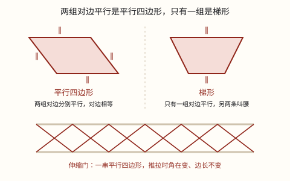

平行四边形和梯形的认识
两组对边分别平行的是平行四边形，只有一组对边平行的是梯形。平行四边形容易变形，三角形却推不动。
| 所属主题 | 图形的认识与测量 |
|---|---|
| 所属模块 | 图形与几何 |
| 课标学段 | 第二学段（3~4年级） |
| 前置知识 | 平行与垂直 |
| 核心素养 | 几何直观空间观念推理意识 |
课标要求
| 图形与几何·图形的认识与测量 | 认识三角形和四边形，会根据图形特征对三角形和四边形进行分类。 印刷第 29 页 行为动词：理解 |
|---|---|
| 图形与几何·图形的认识与测量 | 在图形认识与测量的过程中，增强空间观念和量感。 印刷第 30 页 行为动词：感悟 |
说明
四边形有四条边，可以看成上下、左右两组对边。看这两组对边平不平行，就能给四边形分类：两组对边分别平行的四边形，叫平行四边形。
平行四边形不但两组对边分别平行，对边长度也相等。长方形、正方形都是特殊的平行四边形——它们的对边当然也分别平行，只是四个角恰好都是直角。
只有一组对边平行的四边形，叫梯形。平行的这两条边叫上底和下底（短的叫上底，长的叫下底），不平行的两条边叫腰。两腰相等的叫等腰梯形，一条腰垂直于底的叫直角梯形。
从平行四边形一条边上的一点向对边作垂线，这条垂线段就是它的高，垂线落在的那条边叫底；梯形的高就是两底之间的垂线段。
平行四边形还有一个本事：容易变形。四根小棒钉成平行四边形，用手一推，角就变了，形状歪掉，可四根小棒一根也没变短。三角形正好相反，三根小棒钉成的三角形怎么推都不动，这叫稳定性。
使用场景
小区的电动伸缩门：一拉一推，门就变长变短，靠的正是每一个平行四边形都能变形。
剪叉式升降平台、折叠晾衣架：修理路灯的车把工人举上去，交叉的杆子越张越高，道理完全一样。
自行车架、篮球架、屋顶的三角桁架：这些地方要的是三角形的稳定性，所以推不动、不变形。
停车位：斜着划的车位大多画成平行四边形，车头朝一个方向进出，同样的地方能多停几辆。
地砖和花砖：许多拼花地砖做成平行四边形、六边形，靠的就是对边平行才能拼得严丝合缝。
注意点
「只有一组」四个字不能丢。梯形是只有一组对边平行；两组都平行的就归平行四边形了，不能又叫梯形。
平行四边形的高不止一条。以哪条边为底，就从对边向它作垂线；底换了，高也跟着换，别把一条高当成唯一。
高必须垂直于底。从顶点斜着连到对边的那条不是高，量出来会比真正的高长。
梯形的高在两底之间，和腰没有关系；等腰梯形的两条腰相等，但腰不是高。
「容易变形」不是缺点。伸缩门、升降架正要用它变形；需要稳固的地方（车架、支架）才该用三角形。
为什么是这样

图 1：靠「几组对边平行」区分两类四边形；伸缩门正是利用了平行四边形容易变形
算理推导
先给四边形分类。四条边两两相对，一共两组对边。按「有几组对边平行」来数，只有三种情况：两组都平行、只有一组平行、一组也不平行。前两种各有名字，第三种就是一般四边形。
为什么第二种非得说「只有一组」？因为它如果其实还有第二组平行，就落进平行四边形那一类去了。「只有」是在划清界限：平行四边形占两组，梯形占一组，两类不重叠、也不留空。
那长方形、正方形为什么算平行四边形？它们的对边本来就分别平行，只是四个角恰好是直角。平行四边形的定义只要求「两组对边分别平行」，没管角的大小，所以长方形是它的一个特例。反过来讲不通：平行四边形不一定是长方形。
再看「容易变形」。拿四根小棒钉成四边形，四条边的长度都定死了，可你一推，四个角还能一起改变——边定住了，角没定住，形状就不定。三角形不一样，三根小棒一钉，三个角被挤得死死的，怎么推都不动：三条边确定以后，能拼出的三角形只有一个模样；四条边确定以后，能拼出的四边形却有无数个。
伸缩门怎么用上这一点的？它由许多根等长的杆子交叉连成一串平行四边形。推的时候每个平行四边形的角同时变小，整串就缩短；拉的时候角变大，整串就伸长。杆子一根没短，变的只是角。所以门能缩进一点点地方，也能挡住很宽的门口。
升降平台同理：交叉的杆子像一把能开合的剪刀，角一变，平台就升高或降低。而自行车架、篮球架要承力、不能晃，就用三角形——同一个道理用在哪一边，取决于你要它「动」还是「不动」。
动手实验
用四根一样长的小棒（或吸管）和四个图钉，钉成一个平行四边形；再拿三根钉一个三角形。两手捏住平行四边形的两个对角轻轻一推——它立刻歪成另一个形状，可四根棒还是那么长；换成三角形，用同样的力推，推不动。再把两个图形立在桌上，各压一本厚书：平行四边形会塌下去，三角形稳稳撑着。最后把平行四边形的一条对角线用一根小棒固定住（相当于把它分成两个三角形），你会发现它也推不动了——这一根小棒，正是工程师给桥梁、给货架加斜撑的原因。
按场景的例题
例 1（场景：工程建造） 小区门口的电动伸缩门
小区门口的电动伸缩门由一排平行四边形连成。为什么它能拉长、能缩短，而每根杆子的长度一直没变？
解：平行四边形容易变形：四条边长度固定时，四个角还能一起改变。推拉时每个平行四边形的角同时变小或变大，整排的总长度跟着变，杆子本身并没有伸缩。
答：因为平行四边形容易变形，变的是角，不是边长。
例 2（场景：校园生活） 篮球架的斜撑
学校的篮球架下面有一根斜撑，和立柱、横梁一起围成一个三角形。为什么不用四边形做这根斜撑？
解：三角形具有稳定性：三条边确定后形状就定了，受力也不变形。四边形（平行四边形）容易变形，拿它做支撑会晃。所以篮球架、塔吊、屋顶桁架都用三角形。
答：三角形稳定，四边形容易变形，需要稳固的地方要用三角形。
例 3（场景：计量与估算） 平行四边形花坛围栏杆
校园里有一块平行四边形花坛，相邻两条边分别长 8 米和 5 米。要沿花坛四周装一圈护栏，需要多少米？
解：平行四边形对边相等，所以四条边是 8 米、5 米、8 米、5 米。周长 = 8 + 5 + 8 + 5 = 26（米），也可以写成 (8+5) × 2 = 26（米），和长方形周长的算法一样。
答：需要 26 米护栏。
例 4（场景：农业生产） 农田灌溉渠的横截面
农田的灌溉渠挖成上口宽、渠底窄的样子，横截面是一个四边形：上口和渠底都是水平的，两侧是斜坡。这个横截面是梯形吗？哪两条边互相平行？
解：上口和渠底都是水平的，在同一平面内永不相交，互相平行；两侧的斜坡一左一右向外张开，延长后会相交，不平行。所以这个四边形只有一组对边平行，是梯形。上口和渠底就是它的上底和下底，两条斜坡是腰。
答：是梯形，上口和渠底互相平行，两条斜坡是腰。
常用推论
平行四边形：两组对边分别平行且相等；长方形、正方形都是特殊的平行四边形。
梯形：只有一组对边平行；平行的两条边叫上底、下底，不平行的两条边叫腰；两腰相等的叫等腰梯形。
平行四边形的周长等于相邻两边长度和的 2 倍，即 C = 2(a+b)，因为对边相等，算法和长方形一样。
三角形具有稳定性，平行四边形容易变形：要它稳住就用三角形，要它能伸缩就用平行四边形。
正方形是特殊的长方形，长方形是特殊的平行四边形；它们和梯形一样，都属于四边形这个大类。
从平行四边形一条边上的任意一点向对边作垂线，这条垂线段就是高；底不同，对应的高也不同。
易错点
错看到一个两组对边都平行的图形，说「这也是梯形」。
为什么错梯形要求只有一组对边平行。两组都平行就已经是平行四边形了，两类不能重叠。多一组平行不是「更梯形」，而是换了一类。
正确两组对边分别平行 → 平行四边形；只有一组对边平行 → 梯形。先数平行的组数，再下结论。
错画高的时候，从平行四边形的一个顶点斜着连到对边，说这条斜线是高。
为什么错高必须垂直于底。斜线段是从顶点「绕过去」的，量出来比真正的高长，用它算面积会算多。
正确把三角尺的一条直角边贴住底边，另一条直角边过那个顶点，沿它画出的垂线段才是高。
错用四根木条钉成一个长方形框架，说它「钉死了，不会变形」。
为什么错长方形也是平行四边形，一样容易变形。四个角没有被固定住，用手一推对角，它就歪成一般的平行四边形了。
正确想让框架稳固，要加一根斜撑，把它分成两个三角形；或者干脆用三角形做支架。
错把等腰梯形的腰当成高，说「腰长 6 厘米，所以高是 6 厘米」。
为什么错腰是斜的，高是两底之间的垂线段，斜边总比垂线段长。腰的长度和高没有关系。
正确从上底的一点向另一底作垂线，量这条垂线段才是高；它一定比腰短。
直观理解
把四边形想成四根木条用钉子串起来的相框。钉子只固定了「边有多长」，没固定「角有多大」，所以你一推，相框就歪——这就是平行四边形的「不稳定性」。三角形是三根木条首尾钉死，三个角被挤得动弹不得，推也白推。伸缩门就是把许多个这样的「会歪的相框」串成一排：每个歪一点，整排就短一截；每个正一点，整排就长一截。而梯形像一个上窄下宽的堤坝，只有坝顶和坝底是平着互相平行的，两边的斜坡各走各的方向。
两组对边都平行，平行四边形；只有一组叫梯形，上底下底加两腰。平行四边形会变形，三角稳定推不动。